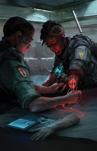

Cyberpunk Red
{kind=link}
Critique
Introduction
Revenons en premier lieu brièvement sur l'histoire du jeu de rôles Cyberpunk. Car si Cyberpunk Red est officiellement la 3e édition de Cyberpunk, dans les faits c'est plutôt la 4e ou 5e édition :
- Cyberpunk (appelé communément Cyberpunk 2013), publié en 1988.
- Cyberpunk 2020, publié en 1990.
- Cyberpunk 3.0, publié en 2005 mais n'est plus considéré comme canon, dû à son impopularité. Dans l'ensemble, cette édition s'était beaucoup trop éloignée du Cyberpunk et lorgnait clairement du côté de la Science-Fiction.
- Cyberpunk 2020.2 devait à l'origine être publié en 2010 mais est finalement devenu Cyberpunk Red.
- Cyberpunk Red, publié en 2020, donc.
Publier une nouvelle édition d'un jeu de rôles plus de 30 ans après la première est donc un défi, car il faut à la fois combler les attentes des vétérans sans les lasser tout en acceuillant de nouveaux joueurs. Mike Pondsmith en explique bien toute la difficulté dans les premières pages. On pourrait donc résumer Cyberpunk Red en disant c'est la même chose que Cyberpunk 2020 mais en mieux. Tout est mieux, la présentation générale, les illustrations, le système de jeu (sauf le combat mais nous y reviendrons), l'écriture, etc. On sent que cette édition a bénéficié à la fois de plus de moyens et de l'avancement technologique. Pour ce dernier point, le simple fait d'avoir un PDF recherchable est par exemple un gros plus.

Le système de jeu
Globalement les seuls changements majeurs se situent au niveau des caractéristiques et du système de combat. Cyberpunk Red reste donc très compatible avec son aîné et les règles maisons qui ont été développées aux fils des ans. Les joueurs disposent dorénavant de dix caractéristiques au lieu de neuf. La Beauté a disparu car certains joueurs s'en servaient comme poubelle vu qu'elle est facilement augmentable grâce en autre à la chirurgie esthétique. Deux nouvelles caractéristiques ont donc fait leur apparition, Volonté et Dextérité, rapprochant un peu Cyberpunk Red des standards du jeu de rôles. Ce changement a l'air judicieux mais il faudra bien évidemment voir à l'usage.
De manière générale les règles ont été fluidifiées et rendues plus accessibles aux nouveaux arrivants. Par exemple, la création de personnages est possible de trois façons différentes, une par modèles destinée aux débutants, une rapide destinée aux scénarios one-shot et enfin la complète proche de Cyberpunk 2020. Dommage de ne pas s'être débarrassé des classes, pas franchement essentielles, même si j'imagine qu'elles ont été conservées pour guider les débutants.
Néanmoins il ne faut pas confondre simplifiées et simplistes et c'est un peu ce que je reproche aux nouvelles règles de combat.
Les règles du Friday Night Firefight visaient le réalisme et même s'il est toujours illusoire (et potentiellement ennuyeux) de viser un réalisme total, c'est sans doute un des systèmes de combat en JDR qui s'en rapproche le plus. Le revert de la médaille, c'est qu'il était long et éventuellement contraignant pour les joueurs ne priviligiant pas l'action. Mike Pondsmith et son équipe ont donc décidé de les simplifier, beaucoup trop à mon goût. Je ne vais pas rentrer dans les détails, mais les vétérans risquent de ne pas s'y retrouver. Et franchement pouvoir éviter les balles ? Merci mais on n'est pas dans Matrix.
Heureusement le système de combat reste, à l'image des autres règles, hautement compatible avec celui de Cyberpunk 2020.
Enfin, le netrunning a lui aussi connu une cure de jouvence, ce qui là n'était pas du luxe vu la médiocrité des anciennes règles. Médiocrité telle que je ne saurais me prononcer sur les améliorations ou non, ayant toujours joué avec des règles maisons.
{kind=link}
Scénario & illustrations
Concernant l'écriture, c'est mieux, mais ce n'était pas difficile. Et je ne parle pas de l'abominable traduction française. La plupart des évènements importants y sont résumés ainsi que ceux de ce fameux Time of the Red. Il ne fait que peu de doutes que plus de détails viendront avec les futurs suppléments, n'étant pas le but du livre de base.
Comme dans Cyberpunk 2020, il y a des embryons de scénarios sur quelques pages mais franchement rien de bien passionnant. Un peu d'efforts à ce niveau auraient aidé les débutants mais j'imagine que là aussi les suppléments s'en chargeront.
Dernier point, les illustrations. Elles sont très bonnes, à quelques exceptions près. Par contre, il n'y aucune illustration de l'équipement, armes, véhicules ou cybernétique et c'est fort dommage. J'espère que cela sera rattrapé dans le futur Black Chrome qui prendra la suite des Chrome Books.
Conclusion
Vous l'aurez compris, malgré certaines réserves, Cyberpunk Red est une nette avancée par rapport à Cyberpunk 2020. Il ne reste plus qu'à espérer que R. Talsorian choississe plus judicieusement ses partenaires pour l'écriture de suppléments, Atlas Games hante encore nos cauchemars. Et pour la traduction française, il sera difficile de faire pire qu'Oriflam, mais nous reviendrons à sortie sur le travail d'Arkhane Asylum.
Il est trop tôt pour tirer les conséquences des changements au niveau des règles mais ces changements n'étant finalement pas révolutionnaires, il est fort probable que les joueurs seront s'y adapter ou, comme pour Cyberpunk 2020, utiliseront des règles maisons.